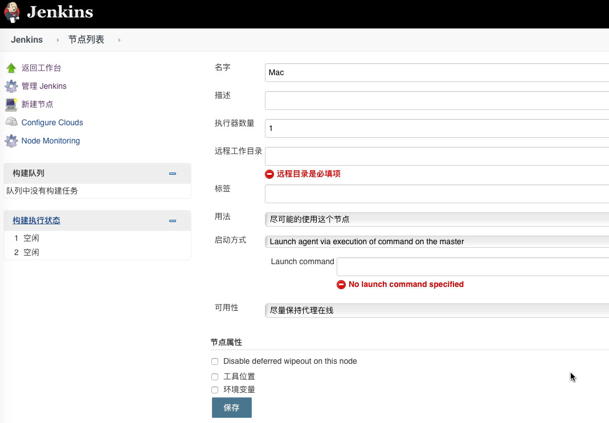

本文主要介绍在Mac上使用Docker的方式搭建Jenkins CI工具的过程。
持续集成（Continuous Integration，简称CI）是满足产品的快速迭代需求的一种技术支持。
产品需求在持续快速变更，怎么在快速实现的同时保证交付的质量，目前在业界已经有了标准的流程：持续集成、持续交付以及持续部署。CI是一种降低风险、减少人力的手段。常见的CI构建工具有：
- Jenkins
- Travis CI
- Gitlab-CI
Jenkins是一款广为人知、成熟的工具，功能完整，插件丰富。Jenkins官网对Jenkins有一些基本介绍。
安装Jenkins
安装镜像1
docker pull jenkins
启动服务1
docker run -p 8080:8080 -p 50000:50000 jenkins/jenkins:lts
如果想指定Jenkins中的数据挂载到宿主机的目录：1
2
3
4docker run -d
-p 8080:8080 -p 50000:50000
-v /Users/ryan/DevEnv/Jenkins/Volumes/home:/var/jenkins_home
jenkins/jenkins:lts
请注意安装完成后，terminal提示：1
2
3
4
5
6
7
8*************************************************************
Jenkins initial setup is required. An admin user has been created and a password generated.
Please use the following password to proceed to installation:
00f490545a0******9a754564ab1481f1
This may also be found at: /var/jenkins_home/secrets/initialAdminPassword
*************************************************************
Jenkins已启动，浏览器打开 http://localhost:8080 (默认端口)，输入admin用户跟密码（即上面提示的密码），进入初始配置。按推荐装好插件，创建好新的管理员帐号，就可以进入Jenkins的前端页面了。
添加插件
建议先进入「管理Jenkins」/「管理插件」，选择「高级」，修改插件更新源，可使用：
1 | Jenkins 中文社区 |
在「可选插件」一栏，可以勾选比如Git相关的、SSH相关的、Sonar相关的，Xcode相关的，按需安装。
添加Credential
对于Git仓库或者打包机，需要配置SSH访问的Credential。
对于Git仓库，比如是托管在Gitlab的代码仓库，一般是将生成的SSH的RSA密钥串的公钥配置到Gitlab上，私钥保存在开发机/打包机。把私钥copy配置到Jenkins上的Credential即可。
对于作为执行任务的打包机Slaver（下一节讲到），Jenkins需要通过SSH的方式访问打包机，因此打包机需要配置启动sshd服务。需要将访问slaver的公钥配置到authorized_keys，sshd的配置不赘述。
添加节点
因为Docker安装的Jenkins是处于隔离的容器环境的，如果需要使用Xcode或者Node的环境来打包，是需要添加其他机器作为Jenkins的节点来执行任务的，Jenkins运行机器作为Master，其他节点作为Slaver。
确定好要执行任务的机器，配置并添加节点。
Slaver环境配置
根据执行任务的需要来配置Slaver节点的环境。比如Mac节点执行iOS项目的打包任务，需要安装好基础的软件，比如：Xcode、CocoaPods、JDK等。
打开终端查找JDK路径：/usr/libexec/java_home -V，若未安装JDK，可以使用homebrew安装：
1 | brew install homebrew/cask/java |
安装JDK后建议将JAVA_HOME的路径配置到Slaver的.bash_profile文件中。
若CocoaPods在系统更新后失效，可以尝试重装：
1 | sudo gem install -n /usr/local/bin cocoapods |
Jenkins添加节点
进入「管理Jenkins」/「节点管理」，新建节点：

启动方式可以选择SSH登录的方式，使用配置好的Credential即可（上一小节已说明）。
勾选工具位置，填好相关工具（主要是Git）在slaver的位置。勾选环境变量，配置好JDK的位置（JAVA_HOME）。
最好配置一下标签，后续配置任务的时候可以指定特定标签的机器来执行。
添加完节点后，可以回到节点列表，如果没有提示错误表明配置成功，可以使用该节点来执行任务了；如果有报错，则查看并根据具体的错误来修正。
打包任务
对于iOS打包任务，主要包括：
- 配置Git仓库
- 参数化配置
- 打包脚本
- Sonar Scanner
网上也有比较多介绍，不赘述。签名相关的问题，请参考「证书管理」。
证书管理
请参考：Jenkins的Keychains and Provisionning Profiles Management插件。
如果确实有问题，需要访问打包机的keychain，可以：
1 | security unlock-keychain -p "login pwd" ~/Library/Keychains/login.keychain |
可以在Keychain Access中，新建一个新的Keychain组方便任务使用。
其他
安装过程中有遇到问题，可以到Jenkins官网查看有无解决方案。